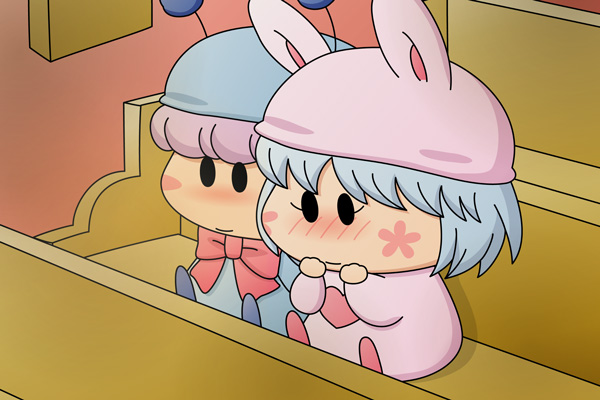

――クリスマスイブの前日。
パピィ「ね、ねぇ・・・ムルモは明日の夜はどうちゅるの？」
ムルモ「クリスマスの夜はお城のクリスマス礼拝に参加するのが
おうちの決まりごとなんでしゅ」
パピィ「そう・・・」
ある程度予想していたとはいえ、ムルモのそっけない返事にがっくりするパピィ。
ムルモ「良かったらパピィも来るでしゅか？」
パピィ「へ・・・？
う、うん、そうね・・・。
あたちもクリスマスの夜は忙ちいけど、ムルモがそう言う
なら行ってあげる！」
ムルモ「礼拝ではたくさんお歌を歌うんでしゅけど、パピィには
歌えるんでしゅかね～～？」
パピィ「なんでちゅって！
ムルモに歌えるんならあたちにだって歌えるわよ！」
――その日の晩。
パピィ「これはチャンスだわ！
明日こそムルモに告白してあたちたちは恋人同士になるのよ！
・・・でもどうやって告白ちよう・・・」
あれこれ悩みながら、眠れない夜は更けていきました。
イブの夜、二人はお城で待ち合わせて、一緒に礼拝堂へと向かいました。
ムルモ「まだ早かったでしゅね。
席もたくさん空いているでしゅ。
とりあえずここに座るでしゅ」
ムルモが椅子に座ると、その横にパピィも座りました。
ムルモにくっつくようにして・・・。
ムルモ「ちょ・・・」
顔を真っ赤にして下を向いているパピィを見て、そしてパピィのドキドキする心臓の音を聞いて、ムルモは言いかけた言葉を引っ込めました。
ムルモ「は、早く始まらないでしゅかね～」

クリスマスイブ向けな絵を描いてみました。何とか間に合った・・・。本当は周りにいろんな妖精も座らせるはずでしたが、時間不足のため二人だけになってしまいました…。
妖精界でもきっと人間界と同じようにクリスマスは盛り上がっているんだと思います。パピィもきっと新たな告白作戦に出るはず…。でも礼拝にてクリスマスの本当のお話（サンタさんとかカップルが愛を語り合うとかじゃなく）が始まると、前日あまり眠れなかったパピィは途中で寝てしまったりして…。
(2008/12/24)